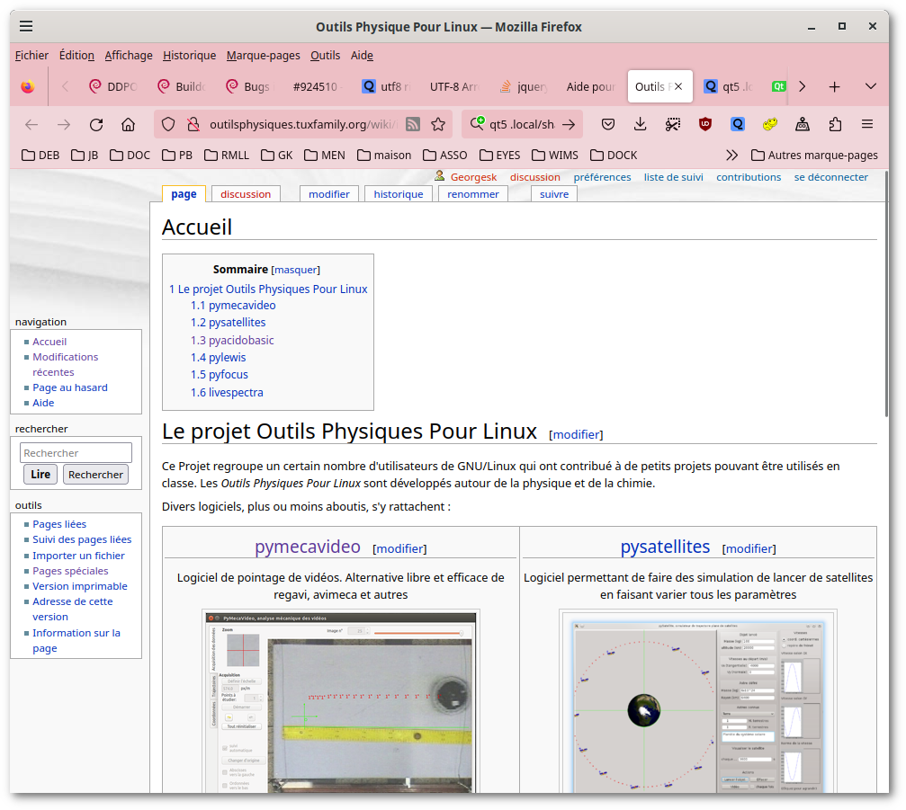
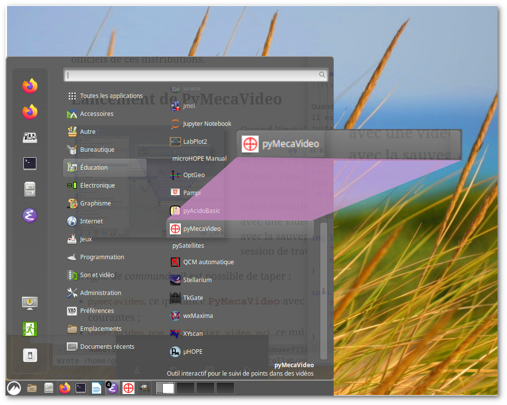
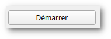
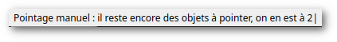
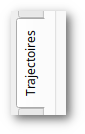
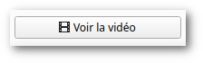
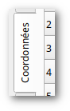
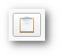
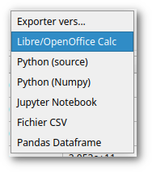

Résumé
PyMecaVideo est un logiciel facilitant le repérage de points mobiles dans une vidéo et d'en exploiter la cinématique pour des usages de mesure physique.
Il est possible de faire des mesures physiques à l’aide d’images,
dans certaines conditions. PyMecaVideo
facilite les mesures physiques faites sur des séquences d’images vidéo.
Il suffit de travailler à partir d’un fichier vidéo de type AVI, encodé à l’aide d’un codec
libre1, qui comporte au moins une
image dont on peut déterminer l’échelle.
PyMecaVideo permet d’ouvrir et de décomposer en images la vidéo, et par des pointages successifs, de suivre le mouvement d’un point, et éventuellement le mouvement de l’origine d’un référentiel mobile dans le cadre des images. Les données pointées sont ensuite exploitables à l’aide de logiciels d’analyse standard.
 Les sources de
PyMecaVideo sont disponibles parmi les
« Outils Physiques Pour Linux » hébergés sur le site
tuxfamily.org. Pour l’installation sous Linux™, récupérer l’arbre des sources comme
expliqué à la
page spécifique de Pymecavideo, lancer la commande git clone git@gitlab.com:oppl/pymecavideo.git
entrer dans le répertoire pymecavideo/src, et taper la commande
suivante : make. Cela crée les
fichiers manquants (interfaces utilisateur, traductions vers l’anglais).
Depuis ce répertoire-là, une commande python3 pymecavideo.py permet alors de
lancer l’application.
Il est possible aussi d’obtenir des fichiers binaires, qui sont pris en charge par le gestionnaire de paquets de votre distribution préférée. Actuellement on trouve des paquets pour Debian et Ubuntu, disponibles dans les dépôts officiels de ces distributions.

Quand l’installation est faite à partir d’un paquet approprié, il est possible de lancer PyMecaVideo de diverses façons : juste avec les préférences courantes (ce qui charge la précédente vidéo travaillée si elle est retrouvée), ou avec une vidéo imposée, ou encore avec la sauvegarde d’une précédente session de travail.
En ligne de commande, il est possible de taper :
pymecavideo, ce qui lance PyMecaVideo avec les préférences courantes ;pymecavideo nom_de_fichier_video.avi, ce
qui lance PyMecaVideo avec un nouveau
fichier vidéo ;pymecavideo fichier_de_sauvegarde.mecavideo,
ce qui lance PyMecaVideo avec la sauvegarde
d’un ancienne session de travail.On peut aussi le lancer à partir du menu graphique de votre gestionnaire de fenêtre : KDE, Gnome ou Cinnamon, etc. intègrent l’application dans le menu si vous faites une installation à l’aide d’un paquet.
l’application est accessible par les menus Éducatif ↦ Science ↦ PyMecaVideo.
l’application est accessible par les menus Éducation ↦ PyMecaVideo.
Voici l’icône de l’application : 
La préparation de la vidéo commence dès la prise de vues. Les points-clés sont les suivants :
Choisir un bon éclairage. Les éclairages fluorescents posent parfois problème, car leur intensité varie à des fréquences proches de celle de la vidéo, et cela peut engendrer quelquefois des phénomènes stroboscopiques. D’autre part, pour les caméras vidéo disposant de bons automatismes, un éclairage suffisant facilite le choix de temps de pose courts, plus favorables à l’acquisition de données.
La scène doit posséder un bon contraste. En particulier les objets à suivre doivent se distinguer aisément de leur environnement, par la clarté, sinon par la couleur.
Il faut penser à laisser dans le cadre un objet de taille connue, dans le même plan focal que la scène à filmer. Il est bon de documenter la dimension de l’objet-étalon.
L’axe optique de la caméra doit être perpendiculaire au plan dans lequel se déplace l’objet étudié. Il doit pointer environ vers le milieu de la trajectoire probable.
On commence à filmer avant l’évènement, on arrête après l’évènement. Il est préférable de fixer le début et la fin de la séquence vidéo à l’étape de montage.
Utiliser un logiciel libre de montage, et couper la séquence
pertinente. Quelques dizaines d’images au plus suffisent. La choix d’un
logiciel libre assure que les codecs utilisés ne poseront pas de
problème à l’avenir. Exemples de logiciels utilisables : Kino, Cinelerra. La vidéo
sera enregistrée dans un conteneur au format .avi ou .mp4, .ogv, etc.
Il faut bien sûr commencer par charger une vidéo avant de pouvoir en
faire quoi que ce soit. Ça peut se faire au lancement de la commande, en
tapant en ligne de commande : pymecavideo nom_de_fichier_video.avi, ou
en mode graphique quand PyMecaVideo est
lancé, par le menu Fichier ↦ Ouvrir une vidéo, ou encore si on veut une
des vidéos d’exemple, par le menu Aide ↦ Exemples ...

Quand on dispose d’un fichier vidéo ouvert, le bouton « Définir l’échelle » est actif, mais la valeur de l’échelle est encore indéfinie. On peut utiliser le curseur ou le champ de numéro d’image pour faire apparaître une image autre que la première de la séquence vidéo. Il faut que l’objet étalon soit dans le champ, et il faut connaître sa longueur en mètre.
On clique alors sur ce bouton, on renseigne la longueur de l’objet-étalon dans le dialogue qui surgit (on utilise la virgule ou le point comme séparateur décimal, indifféremment : par exemple 0,60 m pour signifier 60 cm), on valide, puis lorsque le curseur de la souris devient une croix verticale, on réalise un tirer-glisser le long de l’objet-étalon.

Quand l’échelle est définie, le bouton précédent devient « Refaire l’échelle » : on peut donc recommencer à saisir l’échelle à nouveau.
Par défaut, on étudie le mouvement d’un seul objet, le référentiel étant celui de la caméra.

Il est possible de faire porter l’étude sur deux objets ou plus. Un des objets de la série pourra plus tard être utilisé comme nouvelle origine du référentiel pour recalculer une vidéo.
Pour étudier plus d’un objet, il faut modifier la valeur affichée dans la zone intitulée « Objets à étudier : »

On peut décider de ne pas commencer le pointage dès la première image. Dans ce cas, il faut choisir manuellement l’image initiale à l’aide du curseur en haut à gauche, ou du champ de sélection de numéro d’image. Le pointage commence quand on clique sur le bouton « Démarrer ».

Quand l’acquisition est en cours, une petite phrase dans la ligne de statut, en bas de la fenêtre, rappelle le numéro du point qu’on est censé cliquer en suivant. Les traces des points précédemment cliqués apparaissent en couleurs. Les points de couleur doivent se suivre sans discontinuité, sinon c’est la marque d’une faute de pointage.

Les icônes « défaire » et « refaire » permettent éventuellement de rattraper une faute de pointage quand celle-ci est reconnue.
Il n’est possible de refaire des pointages antérieurs que tant qu’on n’a apporté aucune modification aux pointages précédemment défaits. Dès qu’un des pointages est corrigé à l’aide de la souris sur la vidéo, les pointages suivants disparaissent de la liste à refaire, et le bouton « refaire » est aussitôt inactivé (grisé).
Il est possible d’arrêter le pointage à tout moment, éventuellement avant la fin de la séquence vidéo.
Après que des points aient été repérés, il devient possible
d’enregistrer le travail grâce au menu Fichier ↦ Enregistrer le projet
mecavideo. On choisit alors un fichier de type .mecavideo2

Quand les pointages sont faits, il est intéressant d’activer le volet des trajectoires. Celui-ci permet d’attirer l’attention plus précisément sur le mouvement et la vitesse des objets étudiés, en faisant apparaître ceux-ci sans la vidéo où on les avait capturés.

Sitôt que plus d’un point fait partie de l’étude, il est possible de faire afficher les positions et les vitesses de plusieurs façons : soit les positions et les vitesses « absolues », c’est-à-dire relatives au référentiel de la caméra, soit les positions et les vitesses « relatives » par rapport à un des objets étudiés, choisi comme origine d’un nouveau référentiel.

Si on active la case à cocher « Montrer les vecteurs vitesse », il convient de choisir une échelle appropriée. L’échelle des vecteurs vitesse se règle à l’aide d’une zone de saisie intitulée « Échelle de vitesses ».
Modifiez sa valeur et appuyez sur la touche Entrée pour obtenir une autre taille des vecteurs vitesse.
Les boutons radio « Près de la souris » et « Partout » permettent d’obtenir le tracé des vecteurs vitesse au survol des points par la souris, ou alors à chaque emplacement où un vecteur vitesse peut être calculé.

Dans le volet des trajectoire, sitôt que le référentiel n’est plus la caméra, le bouton « Voir la vidéo » est activé. Cela permet de voir le film tel qu’il aurait été si la caméra avait été solidaire de l’objet sélectionné comme origine du référentiel.
Quand le visionneur de vidéo intégré se lance, il possède un curseur qui permet de ralentir plus ou moins le déroulement de la vidéo de synthèse.
Les vidéos de synthèse sont intéressantes quand on choisit comme origine de référentiel un point qui se déplace en ligne droite à vitesse constante.
Par exemple, on peut étudier simultanément deux points, dans une vidéo d’un cycliste laissant tomber un objet : un point du cadre du vélo (P1) et un point de l’objet qui tombe (P2). Dans le référentiel terrestre, celui de la caméra si on est en plan fixe, la trajectoire de P2 est une parabole. Mais dans le référentiel galiléen d’origine P1, le point P2 est en chute libre sans vitesse initiale.
Dans ces circonstances, la vidéo de synthèse obtenue après avoir choisi de représenter le volet des trajectoires à partir de l’origine P1 montre bien une chute libre.
NB. : quand on choisit de réaliser une vidéo de synthèse, il faut garder présent à l’esprit que les images seront en fait découpées à l’intérieur des images déjà existantes. Il faut donc éviter de traiter des images où le point utilisé comme origine s’approche trop du bord de l’image, parce que ça diminue la taille du gabarit de découpe qui produit la vidéo de synthèse.

Le troisième volet de PyMecaVideo est le volet des coordonnées. Il présente un tableau dont la première colonne représente des dates en seconde, et les suivantes des coordonnées en mètre des points étudiés. Ce tableau est juste là pour démystifier le fonctionnement de PyMecaVideo, montrer qu’il ne s’agit que de traitement numérique.
Il est possible d’ajouter des colonnes calculées dans le tableau, si on coche les cases des énergie Cinétique, Potentielle, Mécanique ; enfin, la dernière colonne de ce tableau contient un bouton ornée de l’icône de PyMecaVideo, qui permet de pointer à nouveau (à la main) les objets correspondant à une ligne défectueuse. On peut aussi pointer les objets des lignes vides immédiatement voisines d’un pointage déjà fait.

Le bouton « Copier les données vers le presse-papiers » permet d’exporter la totalité du tableau vers le presse-papiers. Il est aussi possible de sélectionner (de mettre en surbrillance) une partie du tableau pour que cette partie soit automatiquement copiée vers le presse-papiers. La partie sélectionnée peut aussi être tirée-glissée vers d’autres applications. Si ces applications sont capables de récupérer les données et d’en faire usage, elles accepteront l’exportation. C’est le cas des traitements de texte et des tableurs les plus courants.

Le volet « coordonnées » de Pymecavideo permet des exportation automatiques vers divers logiciels de traitement de données, grâce au menu déroulant « Exporter vers… ». Les exportations automatiques permettent l’ouverture des logiciels choisis, avec les données prêtes à l’utilisation. Le tableau suivant signale les logiciels supportés, ainsi que leur disponibilité sous GNU/Linux et sous Windows™.
Tableau 1. Logiciels libres de traitement des données
| Logiciel | Description |
|---|---|
| Un tableur populaire, plutôt destiné à la bureautique | |
| L’export se fait sous forme de fichier source Python ; il suffit de le reprendre avec un éditeur approprié | |
| L’export se fait sous forme de fichier de donnée optimisé pour l’usage avec Python/numpy ; une suggestion est faite pour utiliser ce format | |
| Le format notebook (bloc-note) de Jupyter est exploitable par un serveur Jupyter. Ce serveur peut être installé sur l’ordinateur local, ou accessible à travers Internet ; les blocs-notes de Jupyter sont riches de possibilités éducatives | |
| Le format CSV (champs séparés par des « virgules » est un format texte universel, reconnu par tous les logiciels de traitement de données. Ici, le séparateur de champs est la tabulation, le séparateur décimal est une virgule | |
Pandas est un module pour Python3, qui est dédié au traitement de
grandes séries de données, ce qui est à peu près le cas de
numpy aussi. Le fichier exporté est à un format spécial
pour pandas et une suggestion est faite pour
l’utiliser |
À chaque fermeture de l’application, PyMecaVideo enregistre un fichier de préférences,
nommé pymecavideo.conf. C’est un fichier texte lisible,
dont voici un exemple :
[DEFAULT]
version = pymecavideo 7.3.2-1
proximite = True
lastvideo = data/video/balle-jbart.mp4
videodir = data/video
niveaudbg = 0
sens_x = 1
sens_y = 1
taille = (817,852)
rotation = 90
origine = (311, 389)
index_depart = 12
etalon_m = 0.297
etalon_px = 116.1077086157504
etalon_org = (324, 154)
etalon_ext = (319, 270)
deltat = 0.01
nb_obj = 1L’emplacement de ce fichier sous GNU/Linux est sous le répertoire
caché .local/share/pymecavideo du dossier personnel ; sous
Windows il est placé dans le dossier
C:\Users\<USER>\AppData\Local\pymecavideo.
Ces préférences comprennent le nom du dernier fichier vidéo ouvert, la taille de la fenêtre de l’application, la place de l’étalon utilisé pour l’échelle si celui-ci a été défini, la position et les sens du repère, etc.
En rapportant les bogues aux auteurs. Celles-ci peuvent être de diverses natures : dysfonctionnement du logiciel, mauvaise présentation de l’interface, souhait d’amélioration, etc.
Dans chaque cas, soyez très précis : un rapport de bogue ne permet à l’auteur de réagir que si celui-ci donne une description détaillée. Aussi, n’hésitez pas à jeter un coup d’œil dans les sources du logiciel : elles sont à votre disposition ! en fait, plus d’un contributeur s’est déjà joint aux auteurs, à l’occasion d’un rapport de bogue, pour lequel il apportait la solution (par une modification de la source).
Les sources de Pymecavideo sont en langage Python, et en général assez bien commentées pour être largement compréhensibles.
Publiez des vidéos pédagogiques sous licences libres ! Les vidéos déjà utilisables ne manquent pas, mais beaucoup d’entre elles sont publiées sans que leur licence permette vraiment de les réutiliser librement.
Notez bien qu’une vidéo sans licence, en droit français, appartient à son auteur et ne peut pas être redistribuée sans son consentement écrit.
Une liste de diffusion permet d’échanger des idées de façon
constructive, abonnez vous à <pymecavideo@lists.tuxfamily.org>
© 2007-2022, <ashashiwa@gmail.com> : initiateur
du projet PyMecaVideo, premier auteur du code source
© 2008-2023, <georgesk@debian.org> :
documentation, empaquetage Debian, réorganisations du code et
extensions
© 2008-2010, <markey@free.fr> : vidéos
d’exemple
© 2010, <cedrick.faury@laposte.net> :
portage sous Windows, contributions
Le programme est sous licence libre, vous pouvez le copier, le distribuer et le modifier, dans le respect de la licence GPL-V3
Les vidéos qui accompagnent le programme à titre d’exemple sont diffusées sous la licence CC-BY-SA 3.0.
Selon les termes de cette licence, vous avez le droit de copier et diffuser les vidéos, ainsi que d’en faire des dérivés, et l’obligation de citer l’auteur original, ainsi que d’appliquer la même licence aux travaux dérivés.
1 ↩︎ Attention, un grand nombre de séquences vidéo sont encodées à l’aide de logiciels de codage/décodage (codecs) propriétaires, dont les concepteurs interdisent d’étudier le fonctionnement. PyMecaVideo est un logiciel libre, il n’incorpore pas de sous-ensemble opaque, donc il vous appartient de vérifier la codec utilisé par les séquences vidéo que vous voulez utiliser.
Attention : le format .avi du
fichier est un format conteneur, qui autorise différents codecs. On ne
peut donc pas se baser sur le nom complet du fichier pour deviner le
codec de celui-ci. Pour déterminer le codec d’un fichier vidéo, vous
pouvez utiliser la commande file en
ligne de commande pour GNU/Linux, par exemple :
$ file video/g1.avi
video/g1.avi: RIFF (little-endian) data, AVI, 400 x 300, 25.00 fps, video: DivX 5L’exemple ci-dessus montre que le conteneur AVI
encapsule une vidéo dont le codeur/décodeur (codec) est
DivX version 5.
2 ↩︎ Le type de fichiers .mecavideo équivaut à un type de fichier
.csv, c’est à dire qui contient des
données à un format texte pur, humainement lisible ; les lignes qui ne
commencent pas par le caractère # sont des champs
numériques, séparés par des tabulations (nombres au format
français).
Essayez d’ouvrir un fichier que vous produirez ainsi à l’aide d’un éditeur de texte, vous vous rendrez compte de sa structure, claire et simple à comprendre : après un rappel des préférences courantes, il y a la liste des objets pointés, avec le temps en seconde et les coordonnées en mètre.